Fashionable Wigwams of the Diagram Crinoline Bowery is a proposal for temporary tent structures for the 2013 Ideas City festival hosted by the New Museum and Storefront for Art and Architecture. Building off of the theme of untapped capitol F.W.D.C.B. envisions a series of collapsible wigwam structures clad in fabric cut-offs from the garment district.
 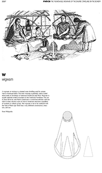
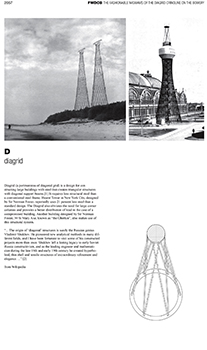
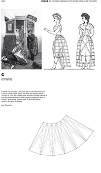
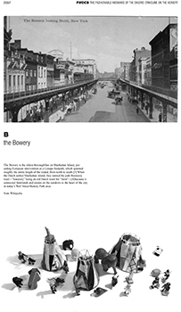
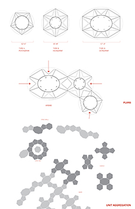
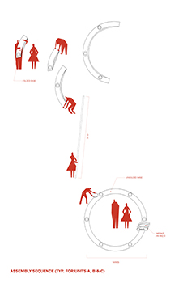
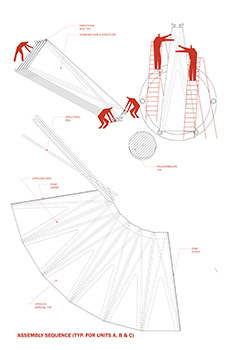
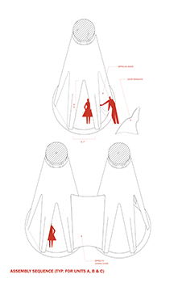
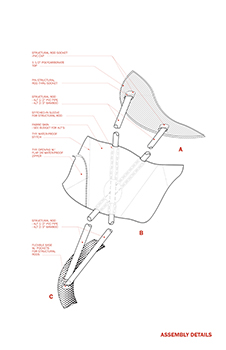
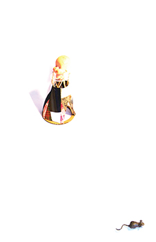
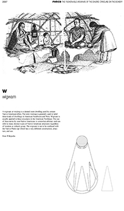
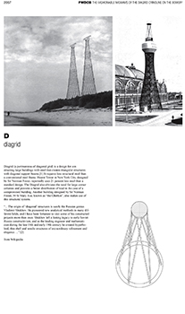
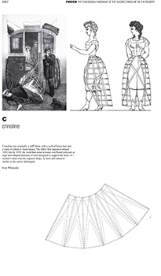
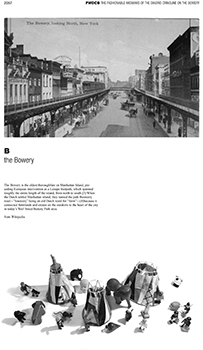
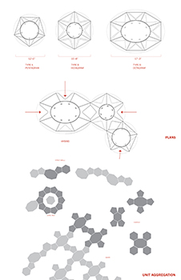
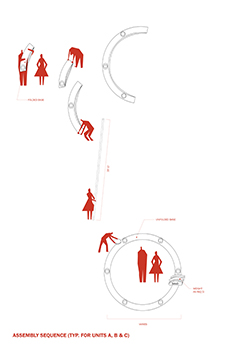
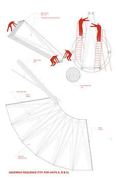
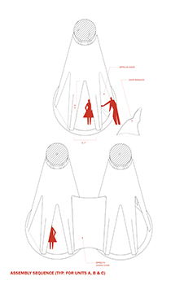
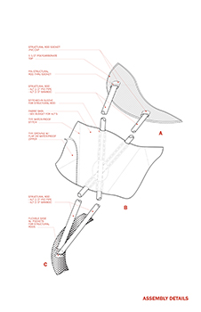
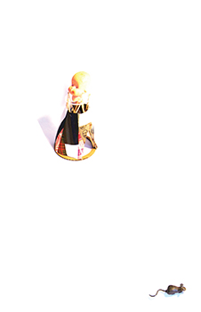